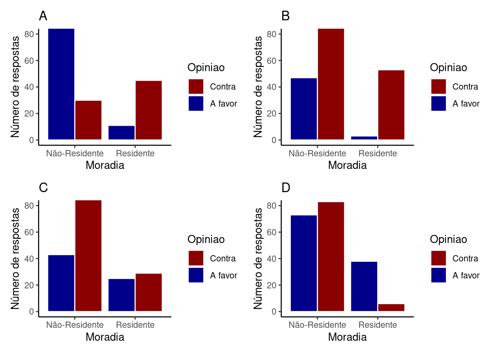
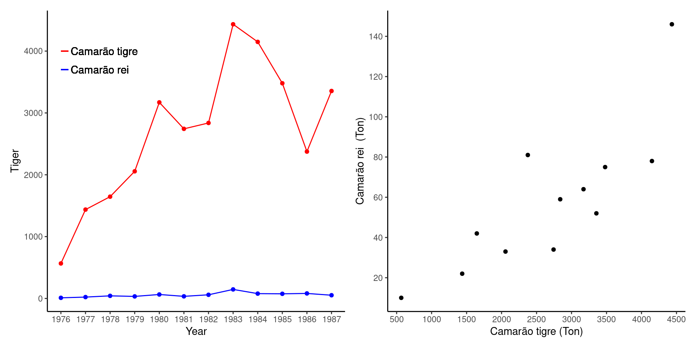
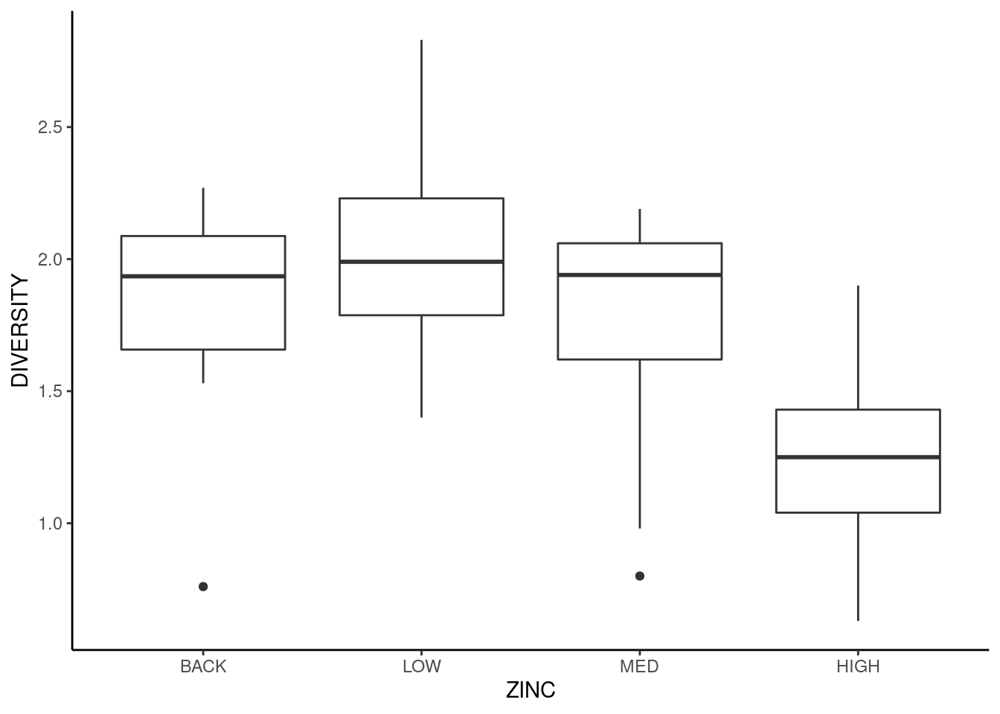
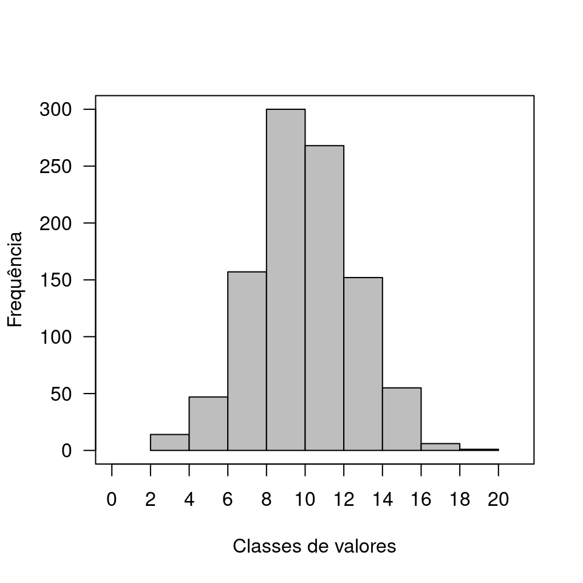

Capítulo 13 Alguns fenômenos têm distribuição normal
No capítulo 12, a distribuição das médias amostrais foi apresentada como um histograma em forma de sino. Este histograma é simétrico ao redor de \(\mu\). A curva teórica que representa esta distribuição é chamada de Distribuição Normal ou Distribuição Gaussiana, ou Distribuição Normal de Probabilidades.
Um dos motivos que tornam a distribuição normal de probabilidades central em estatística é a percepção de que muitos fenômenos naturais podem ser descritos por este padrão. Veja o histograma de alturas de 136 alunos da turma de Introdução a Estatística de 2019 do curso de Bacharelado Interdisciplinar em Ciências do Mar (UNIFESP) (figura à esquerda). A linha sobre este histograma representa a distribuição normal teórica. À direita na mesma figura está um histograma da temperatura média anual em uma cidade americana, onde também foi sobreposta uma curva teórica Gaussiana. Embora estes dados descrevam fenômenos completamente distintos, a distribuição normal se adequa razoavelmente bem aos dois histogramas.
Figure 13.1: Altura (m) de alunos de um curso de estatística e temperatura média anual de uma cidade americana
As técnicas de estatística descritiva apresentadas anteriormente (capítulos ?? e 7) nos permitem entender os padrões resultantes de fenômenos que já aconteceram. Seria interessante no entanto, se pudessemos utilizar estes padrões para realizar predições sobre o que poderá acontecer. Em estatística, a predição se torna possível pelo uso de modelos probabilísticos, dentre os quais a distribuição normal é um dos mais importantes.
Modelos probabilísticos são definidos por funções de probabilidade. A variável envolvida neste modelo é denominada de variável aleatória (capítulos 28 e 29). Uma variável aleatória resulta de um experimento aleatório. Estou utilizando o termo experimento aleatório em como um procedimento científico que nos provê informações sobre algum fenômeno de interesse. Neste sentido, medir a altura de um aluno, tomar a temperatura atual de uma cidade, medir a taxa de crescimento de uma bactéria são todos experimentos aleatórios. A questão relevante nestes experimentos é que antes de ser finalizado, não temos certeza sobre qual será seu resultado. Embora não saibamos qual será o resultado exato do experimento, podemos prever nos basear em algum modelo probabilidades para prever a chance deste resultado estar dentro de determinados limites. O papel de um modelo probabilísticos é portanto, delimitar a incerteza ao redor dos resultados possíveis de um experimento aleatório.
Ao medir a altura de um aluno, podemos supor que existe grande probabilidade desta ficar abaixo de \(1,9\) m. Supomos isto pois temos conhecimento de que a altura de maior parte das pessoas está abaixo deste limite. Entretanto, se quisermos atribuir um valor de probabilidade a esta suposição devemos:
- Assumir que a variável altura segue um determinado modelo de probabilidades, e
- Utilizar dados de um experimento para estimar os parâmetros deste modelo a fim de calcularmos a probabilidade \(P(X \le 1,9)\). Discutiremos isto em detalhes a partir do capítulo 28 para diferentes tipos de experimentos e de modelos de probabilidades.
13.1 O modelo normal de probabilidades
O modelo normal de probabilidades é uma função dada por:
\(f(x) = \frac{1}{\sqrt(2\pi\sigma^2)}e^{-\frac{1}{2}(\frac{y-\mu}{\sigma})^2}\), \(y \in \mathbb{R} | -\infty \le x \le +\infty\)
A expressão envolve as quantias \(\mu\) e \(\sigma\), definidas como os parâmetros da distribuição que representam respectivamente sua média e o desvio padrão. Pdemos apontar que uma variável aleatória \(X\) tem distribuição normal por meio de:
\(X \sim \mathcal{N}(\mu,\,\sigma^2)\)
A média de uma distribuição normal é o ponto central da curva e o desvio padrão mede o grau de espalhamento das observações ao redor de \(\mu\). Para valores baixos de \(\sigma\), a maioria das observações estará próxima a \(\mu\), enquanto para valores altos de \(\sigma\) as observações estarão mais distantes de \(\mu\). Deste modo, ao variar \(\mu\) e \(\sigma\) podemos ter uma infinidade de distribuições normais.

Se as mensurações sobre um determinado fenômeno apresentarem um padrão em forma de sino, podemos buscar a melhor combinação de \(\mu\) e \(\sigma\) e descrever o fenômeno por meio de um modelo normal. Ao fazer isto, poderemos utilizar este modelo para entender quais são as probabilidade de eventos futuros estarem em diferentes faixas de valores. No caso das alturas dos alunos por exemplo, vemos que a probabilidade de um aluno ter mais de 2 metros ou menos de 1,5m é extremamente baixa.
13.2 Entendendo a função normal de densidade de probabilidade
A função \(f(x) = \frac{1}{\sqrt(2\pi\sigma^2)}e^{-\frac{1}{2}(\frac{y-\mu}{\sigma})^2}\) não oferece diretamente a probabilidade de \(x\) assumir determinado intervalo. \(f(x)\) é uma função de densidade de probabilidade. Vamos utilizá-la para encontrar \(f(x)\) utilizando os dados de altura dos alunos do BICT Mar. Vamos assumir que os parâmetros do modelo normal são:
\(\mu = 1.7\)
\(\sigma = 0.11\)
Para um \(x = 1.6\):
\(f(1.6) = \frac{1}{\sqrt(2\pi \times0.11^2)}e^{-\frac{1}{2}(\frac{1.6 - 1.7}{0.11})^2} = 2.399\)
Este resultado corresponde ao ponto em \(x\) no gráfico da distribuição normal. Assim, se calcularmos \(f(x)\) para diferentes pontos em \(x\) teremos um esboço da função de densidade normal.

No R, os resultados acima podem ser obtidos com a função dnorm, que fornece um modo simples para calcularmos \(f(x)\) para a distribuição normal. Nesta função ‘d’ vem de densidade da distribuição normal.
mu <- 1.7
dp <- 0.11
dnorm(1.5, mean = mu, sd = dp)## [1] 0.6945048Se quisermos obter \(f(x)\) para múltiplos valores de \(x\) podemos fazer:
x <- c(1.4, 1.5, 1.6, 1.7)
dnorm(x, mean = mu, sd = dp)## [1] 0.0879777 0.6945048 2.3991470 3.626748013.3 Fazendo predições com a função normal de densidade
Por ser uma função de probabilidade, a área abaixo de \(f(x)\) soma 1. Assim, se desejamos obter probabilidade de uma variável estar dentro de um determinado limite, devemos calcular a área abaixo da curva para este limite. Por exemplo, a probabilidade de uma observação em \(X\) estar entre \(x_1\) e \(x_2\) será:

Você lembra-se que a área abaixo de uma função matemática é dada pela integral definida desta função.
\[P(x_1 \le X \le x_2) = \int_{x_1}^{x_2}f(x) dx\]
Usando o R, a probabilidade de amostrarmos um aluno que tenha entre menos de 1.5 metros pode ser obtida por meio da função pnorm:
mu <- 1.7
dp <- 0.11
pnorm(q = 1.5, mean = mu, sd = dp, lower.tail = TRUE)## [1] 0.03451817Os argumentos desta função são (veja o menu de ajuda digitando ?pnorm no Console do R):
q: o valor de \(x\)
mean: média \(\mu\) da função normal
sd: desvio padrão \(\sigma\) da função normal
lower.tail: se a função irá retornar a probabilidade abaixo (TRUE) ou acima (FALSE) de q
Se quisermos a probabilidade \(P(X \ge 1.5)\) alteramos o parâmetro lower.tail
pnorm(q = 1.5, mean = mu, sd = dp, lower.tail = FALSE)## [1] 0.9654818Se desejamos obter a probabilidade de \(x\) estar entre 1.5m e 1.7m podemos fazer: \[P(1.5 \le X \le 1.7) = P(X \le 1.7) - P(X \le 1.5)\]
No R temos:
p1 <- pnorm(q = 1.7, mean = mu, sd = dp, lower.tail = TRUE)
p2 <- pnorm(q = 1.5, mean = mu, sd = dp, lower.tail = TRUE)
pfinal <- p1 - p2
pfinal## [1] 0.4654818ou simplesmente
diff(pnorm(q = c(1.7, 1.5),
mean = mu,
sd = dp,
lower.tail = TRUE)
)## [1] -0.4654818Aqui estão representados cada um dos intervalos calculados.

13.4 A distribuição normal padronizada
A integral para a função normal é difícil de ser calculada pois não tem solução analítica. Isto era um problema para os cientistas até meados do século XX de precisariam calcular valores de probabilidade para diferentes combinações de \(\mu\) e \(\sigma\). Naquele momento, a solução para facilitar a vida dos pesquisadores foi criar uma tabela descrevendo estas probabilidades em uma distribuição normal padronizada, ou seja para valores particulares de \(\mu\) e \(\sigma\). Padronizar aqui, significa transfomar cada valor \(x_i\) de modo que as observações resultantes tenham média igual a 0 e desvio padrão igual a 1.
Esta transformação é realizada transformando cada observação \(x_i\) em um valor de \(z_i\) por meio da expressão.
\[z_i = \frac{x_i - \bar{x}}{s}\] Lembre-se que no capítulo 7 apresentamos \(z_i\) como uma medida de posição, uma vez que representa uma medida relativa à média e ao desvio padrão de um conjunto de dados particular. Por exemplo, um valor de \(z_i = 2\) significa que a observação original \(x_i\) está 2 desvios padrões acima da média \(\overline{x}\).
Releita o tópico “Interpretando o valor de Z” (Capítulo 7).
Esta transformação é útil, pois ainda que seja difícil calcular as probabilidades para uma variável aleatória \(X\), após a transformação teremos uma variável \(Z\) para a qual os valores de probabilidade estão tabelados. Deste modo, \(Z\) é uma variável aleatória com \(\overline{z} = 0\) e \(s = 1\) tal que:
\[Z \sim \mathcal{N}(0,\,1)\]
Para o exemplos sobre altura dos alunos e chuva mensal temos:

13.4.1 Probabilidades em uma distribuição normal padronizada
Nos dois exemplos anteriores, verifica-se que todas as observações estão situadas, aproximadamente, entre \(z = -3\) e \(z = +3\). De fato, a distribuição normal padronizada ou distribuição Z tem propriedades bem conhecidas. Sua média é \(\mu = 0\) e seu desvio padrão é \(\sigma = 1\), fazendo com que a maior parte das observações fique limitada entre \(z = -3\) e \(z = +3\). Para ser exato, podemos descrever as probabilidades de uma observação estar dentro de alguns limites. Por exemplo, \(95\%\) das observações estará entre \(z = -1.96\) e \(z = +1.96\), isto é, \(P(-1.96 \le Z \le +1.96) = 0.95\). De forma similar, \(90\%\) da área central da curva se encontra entre \(z = -1.64\) e \(z = +1.64\). Estes e outros limites na distribuição normal padronizada podem ser verificados na figura abaixo.

Vamos exemplificar o uso da distribuição Z no cálculo de probabilidades utilizando os dados de altura dos alunos. Para estes dados, iremos encontrar \(P(X \le 1.5)\). Este procedimento consiste de:
- Transformar \(x = 1.5\) em \(z_{1.5}\) por meio de \(z_{1.5} = \frac{1.5 - 1.7}{0.11} = -1.818\);
mu <- 1.7
dp <- 0.11
x <- 1.5
z_1.5 <- (x - mu)/dp
z_1.5## [1] -1.818182- Encontrar encontrar \(P(Z \le z_{1.5}) = P(Z \le -1.818)\).
pnorm(q = z_1.5, mean = 0, sd = 1, lower.tail = TRUE)## [1] 0.03451817Compare este resultado com o obtido anteriormente para verificar que é equivalente a \(P(X \le 1.5)\).
13.4.1.1 A transformação \(Z\)
Do mesmo modo, suponha uma variável aleatória \(X\) nomalmente distribuída conforme \(X \sim \mathcal{N}(\mu,\,\sigma^2)\). Desejamos encontrar \(m\) tal que:
\(P(X \le m) = \alpha\)
\(\alpha\) aqui reprsenta um valor de probabilidade qualquer determinada pela área na distribuição normal abaixo de \(m\).
Ao aplicar a transformação \(Z\) teremos:
\(P(\frac{X - \mu}{\sigma} \le \frac{m - \mu}{\sigma}) = \alpha\)
como \(\frac{X - \mu}{\sigma} = Z\) temos que:
\(P(Z \le \frac{m - \mu}{\sigma}) = \alpha\)
Por meio desta expressão, você pode encontar \(m\) uma vez fornecido \(\alpha\) ou encontrar \(\alpha\), desde que seja fornecido \(m\).
O mesmo vale se quisermos encontrar a probabilidade determinada por um intervalo definido de \(m\) até \(n\) (\(m < n\)). Para isto fazemos:
\(P(m \le X \le n) = \alpha\)
\(P(\frac{m - \mu}{\sigma} \le \frac{X - \mu}{\sigma} \le \frac{n - \mu}{\sigma}) = \alpha\)
\(P(\frac{m - \mu}{\sigma} \le Z \le \frac{n - \mu}{\sigma}) = \alpha\)
13.4.2 Tabela \(Z\)
Ao utilizarmos um software estatístico não é necessário fazer esta transformação. A transformação \(Z\) era necessária na ausência de ferramentas computacionais, ou seja, quando a única opção viável era utilizarmos a Tabela Z para evitar cálculos tediosos para cada combinação de \(\mu\) e \(\sigma\).
A tabela disponibiliza os valores de probabilidade para um grande número de valores de \(Z\) e é apresentada na grande maioria dos livros de estatística.
Você pode utilizar a Tabela \(Z\) para encontrar \(P(X \le 1.5)\). Note que o valor transformado é \(z_{1.5} = -1.818\). Este será o valor que iremos buscar na tabela. Para isto:
Encontre a página que oferece valores negativos, uma vez que \(z_{1.5} < 0\);
Na coluna 1 desta página (coluna z) encontre a linha -1.8 que refere-se à unidade, e à primeira casa decimal de \(z_{1.5}\);
Encontre a coluna 0.02 (quarta coluna da tabela \(Z\)) que apresenta a segunda casa decimal de \(z_{1.5}\). Isto nos leva ao valor mais próximo do calculado (\(z_{1.5} = -1.818\)).
Cruze a linha escolhida no item 3 com a coluna escolhida no item 4. Você irá encontrar o valor \(0,0344\). Este valor e a probabilidade de obtermos um valor de \(z \le 1.5\) na distribuição normal padronizada, ou seja, \(P(Z \le z_{1.5})\). A diferença entre este valor e o encontrado com o R se deve unicamente à limitação da precisão utilizando a Tabela \(Z\).
13.5 Exercícios resolvidos
13.5.1 Distribuição de comprimento
As comunidades de peixes em riachos de cabeceira são compostas por espécies de pequeno porte. Rhamdioglanis transfasciatus é uma destas espécies, desconhecida do público em geral, porém muito abundante em pequenos riachos bem preservados. Dados de captura sugerem que o tamanho dos indivíduos pode ser razoavelmente bem descrito por um modelo de distribuição normal.

Suponha o comprimento desta espécie tenha uma distribuição normal com \(\mu = 10\) cm e \(\sigma = 3\) cm. Encontre:
- A probabilidade de capturar um indivíduo maior de 14 cm de comprimento, \(P(X \ge 14)\).
- A probabilidade de capturar um indivíduo menor de 5 cm de comprimento, \(P(X \le 5)\).
- A probabilidade de encontrar um indivíduo entre 5 e 14 cm, \(P(5 \le X \le 14)\).
- Se um trecho de riacho contém 800 indivíduos, quantos são maiores que 14 cm de comprimento.
RESOLUÇÃO
Para resolver estas questões iremos utilizar a transformação \(Z\).
i. Para encontrar \(P(X \ge 14)\):
Vamos encontrar o respectivo valor de \(Z\) pela transformação
\(z_{14} = \frac{14 - 10}{3} = 1.33\)
Na tabela \(Z\) procuramos a linha que mostra a unidade e \(1^a\) casa decimal de \(1.33\) e em seguida encontramos a coluna que representa a \(2^a\) casa decimal de \(1.33\). Cruzando linha e coluna encontramos o valor \(0,9082\). Note que este valor representa a área abaixo de 1.33, isto é, \(P(Z \le z_{14})\). No entanto, queremos \(P(Z \ge z_{14})\) que representa a área daa curva acima de \(1.33\). Para isto basta fazermos \(1 - 0,9082\).
Deste modo, \(P(Z \ge z_{14}) = 1 - P(Z \le z_{14}) = 1 - 0,9082 = 0.0918\)

ii. Para encontrar \(P(X \le 5)\):
\(z_{5} = \frac{5 - 10}{3} = -1.67\)
Na tabela \(Z\) procuramos a linha que mostra a unidade e \(1^a\) casa decimal de \(-1.67\) e em seguida encontramos a coluna que representa a \(2^a\) casa decimal de \(-1.67\). Cruzando linha e coluna encontramos o valor \(0,0475\) que representa a área desejada.
Deste modo, \(P(X \le 5) = P(Z \le z_{5}) = 0,0475\)

iii. Para encontrar a área central da curva \(P(5 \le X \le 14)\):
Vamos subtrair as quantias \(P(Z \le 14) - P(Z \le 5)\)
Estes valores já foram encontrados nos itens anteriores, de modo que basta fazermos:
\(P(5 \le X \le 14) = 0,9082 - 0,0475 = 0.8607\)

iv. Indivíduos maiores que 14 cm de comprimento
Se a proporção de indivíduos acima de 14 é \(P(X > 14) = 0.0918\) e a população tem \(N = 800\) indivíduos, teremos:
\(0.0918 \times 800 = 73\) indivíduos maiores que 14 cm.
O exercício pode ser resolvido pelo R por meio da função pnorm.
mu <- 10
sigma <- 3
N <- 800
la <- 14
lb <- 5\(P(Z \ge 14)\)
pnorm(q = la, mean = mu, sd = sigma, lower.tail = FALSE)## [1] 0.09121122\(P(Z \le 5)\)
pnorm(q = lb, mean = mu, sd = sigma, lower.tail = TRUE)## [1] 0.04779035\(P(5 \le X \le 14)\)
diff(
pnorm(q = c(lb, la),
mean = mu,
sd = sigma,
lower.tail = TRUE)
)## [1] 0.8609984Número de indivíduos maiores que \(14\) cm de comprimento
pg_la <- pnorm(q = la, mean = mu, sd = sigma, lower.tail = FALSE)
N * pg_la## [1] 72.9689813.5.2 Intervalos em uma distribuição normal
Suponha variável aleatória \(X\) normalmente distribuída conforme com \(\mu = 50\) e \(\sigma = 10)\). Encontre:
- O valor de \(a\) tal que \(P(X \le a) = 0,10\).
- O valor de \(b\) tal que \(P(X \ge b) = 0,85\).
- O intervalo simétrico ao redor da média delimitado por \(c\) e \(d\) (\(c < d\)), que contém \(95\%\) da área sob a curva.
- O valor de \(e\) tal que \(P(50-e \le X \le 50+e) = 0.99\)
RESOLUÇÃO
Veja que neste exercício, foram oferecidos valores de probabilidades e solicitado que você obtivesse os limites em uma distribuição normal específica. Este processo é oposto ao do excercício anterior.
i. O valor de \(a\)
Se \(P(X \le a) = 0,10\), a área da curva abaixo de \(a\) é \(0,10\). Procurando por este valor na tabela \(Z\) vemos que o valor mais próximo é \(0,1003\) que corresponde a um escore \(z = -1,28\). Vamos utilizar este valor para encontrar sua correspondência para a variável aleatória \(X\) que tem média \(\mu = 50\) e desvio padrão \(\sigma = 10\).
\(z = \frac{a - \mu}{\sigma} :: -1,28 = \frac{a - 50}{10}\)
\(a = (-1,28 \times 10) + 50 = 37.2\)

ii. O valor de \(b\)
Se \(P(X \ge b) = 0,85\), a área abaixo de \(b\) que devemos encontrar na tabela \(Z\) é \(1 - 0,85 = 0.15\). Vemos que o valor mais próximo é \(0,1492\) que corresponde a \(z = -1,04\). Ao utilizar este resultado na expressão abaixo temos:
\(z = \frac{b - \mu}{\sigma} :: -1,04 = \frac{b - 50}{10}\)
\(b = (-1,04 \times 10) + 50 = 39.6\)

iii. O intervalo simétrico ao redor da média delimitado por \(c\) e \(d\) (\(c < d\)), que contém \(95\%\) da área sob a curva.
Se entre \(c\) e \(d\) está \(95\%\) da área da curva, temos uma área de \(1 - 0,95 = 0,05\) fora da curva. Como o intervalo é simétrico, teremos \(0,025\) abaixo de \(c\) e \(0,025\) acima de \(d\).
Ao procurar na tabela \(Z\) por \(0,025\) encontraremos \(z = -1,96\) que equivale ena distribuição de X a:
\(z = \frac{c - \mu}{\sigma} :: -1,96 = \frac{c - 50}{10}\)
\(c = (-1,96 \times 10) + 50 = 30.4\)
Novamente, como o intervalo é simétrico e a dsitribuição de \(Z\) é centrada em zero, o ponto \(d\) será de +\(1,96\) que resulta em:
\(z = \frac{d - \mu}{\sigma} :: +1,96 = \frac{d - 50}{10}\)
\(d = (+1,96 \times 10) + 50 = 69.6\)

iv. O valor de \(e\) tal que \(P(50-e \le X \le 50+e) = 0.99\)
Podemos fazer aqui:
\(P(50-e \le X \le 50+e) = P(\frac{50-e - \mu}{\sigma} \le \frac{X-\mu}{\sigma} \le \frac{50+e-\mu}{\sigma}) = 0.99\)
como \(\mu = 50\) e \(\sigma = 10\) temos:
\(P(\frac{-e}{10} \le Z \le \frac{e}{10}) = 0.90\)
Como a área central ocupa \(0,99\) da distribuição, restam \(0,005\) na cauda superior e \(0,005\) na cauda inferior:

Para encontrar \(-e\) buscamos por \(0,005\) na tabela \(Z\) e encontramos \(0,0051\) como valor mais próximo, referente a \(z_{-e} = -2,57\). Substituindo na equação temos:
\(\frac{-e}{10} \le -2,57 :: -e = -2,57 \times 10 :: e = 25,7\)
*Note na figura acima que os limite das áreas em azul são:
\(\mu - e = 50 - 25.7 = 24.3\) e
\(\mu - e = 50 + 25.7 = 75.7\)
O exercício pode ser resolvido pelo R por meio da função qnorm.
Em
qnorm, o ‘q’ vem de quantis da distribuição normal.
mu = 50
sigma = 10
(a <- qnorm(p = 0.10, mean = mu, sd = sigma, lower.tail = TRUE))## [1] 37.18448(b <- qnorm(p = 1-0.85, mean = mu, sd = sigma, lower.tail = TRUE))## [1] 39.63567(c <- qnorm(p = (1-0.95)/2, mean = mu, sd = sigma, lower.tail = TRUE))## [1] 30.40036(d <- qnorm(p = (1-0.95)/2, mean = mu, sd = sigma, lower.tail = FALSE))## [1] 69.59964(e <- -qnorm(p = (1-0.99)/2, mean = mu, sd = sigma, lower.tail = TRUE) + 50)## [1] 25.7582913.5.3 Quantos desvios padrões?
Suponha uma variável aleatória normalmente distribuída representada por \(X \sim \mathcal{N}(\mu,\,\sigma^2)\), determine:
- O valor de \(a\) tal que \(P(X < a) = 0,20\).
- \(P(X \le \mu + 2\sigma)\).
- O valor de \(c\) tal que \(P(\mu -c\sigma \le X \le \mu +c\sigma) = 0.99\)
RESOLUÇÃO
i. O valor de \(a\) tal que \(P(X < a) = 0,20\).
\(P(X < a) = P(\frac{X - \mu}{\sigma} < \frac{a - \mu}{\sigma}) = P(Z < \frac{a - \mu}{\sigma}) = 0,20\)
Procurando pelo valor de \(z\) que delimita \(0,20\) da área abaixo de \(a\) encontramos por \(z = -0,84\), de modo que:
\(-0,84 = \frac{a - \mu}{\sigma}\)
\(a = \mu -0,84\sigma\)
ii. \(P(X \le \mu + 2\sigma)\)
A expressão \(\mu + 2\sigma\) nos diz que o limite de interesse está \(2\) desvios padrões acima de \(\mu\). Ao procurar pelo valor de \(z = 2,0\) na tabela \(Z\), veremos que a probabilidade de interesse é \(P(X \le \mu + 2\sigma) = 0,9772\)
iii. O valor de \(c\) tal que \(P(\mu -c\sigma \le X \le \mu +c\sigma) = 0.99\)
Desenvolvendo esta expressão teremos
\(P(-c \le \frac{X - \mu}{\sigma} \le +c) = P(-c \le Z \le +c) = 0.99\)
Fora deste intervalo simétrico, teremos uma área de \(0,005\) na cauda inferior e \(0,005\) na cauda superior da distribuição \(Z\).
Ao procurar por \(0,005\) na tabela \(Z\) encontramos \(z = -2,57\), de modo que \(c = 2,57\).
13.6 Exercícios propostos
Leia o tópico 7.4.2 O Modelo Normal em (Bussab and Morettin 2010) (pag. 176 a 181) e faça os exercícios 14 a 20 da página 184.